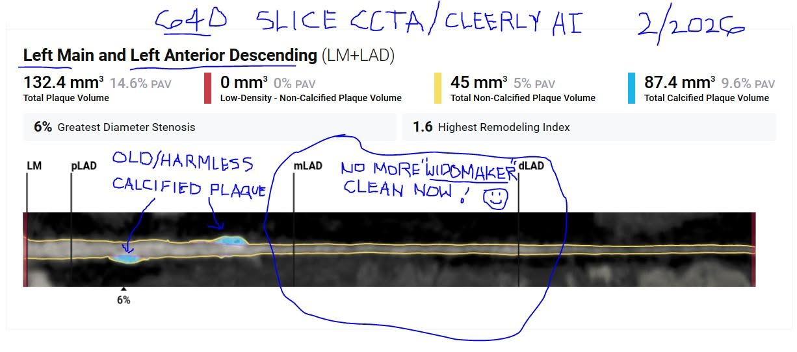

A remarkable case of plaque reversal using high dose EPA from fish oil.
From one of our group members.
There is evidence from randomized trials that fish oil can reverse plaque. I am referring to the EVAPORATE trial. See this post: ↪ EVAPORATE: high-dose EPA reversed plaque in patients with triglycerides above 135 mg/dL.
Warning:
Doses of fish oil this high can increase the risk of developing AFIB. This needs to be seriously considered. Talk to your doctor before starting high doses of fish oil.
#reverseHD #epaHD #fishoilHD #omega3HD #budoffHD #vascepaHD #evaporateHD #bobharrisHD
Widowmaker gone. 6 to 7 months before and after CCTA imaging after using OTC EPA
Just an FYI update on my progress - A “Widowmaker” like plaque, 70% stenotic, Low Attenuated Plaque (LAP) soft plaque with a thin cap, mass of around 50 to 100 mm3. Started treatment in July, 2025 using OTC Eicosapentaenoic Acid (EPA) at 6g (a component of Omega-3, not DHA!) a day with a baby aspirin at 81mg (no statin due to possible EPA SPM and e-series resolvin blunting and no DHA due to resource competition against cell membrane incorporated EPA). First image, April, 2025 using a 64 slice CCTA scanner. Second image, early February, 2026 using a 640 slice CCTA scanner with Cleerly AI imaging plaque analysis software. Note: I am not giving medical advice, just sharing my experience and information for possible educational purposes. I don’t recommend that others try what I did without medical professional supervision because high dose EPA can be dangerous for some (afib risks and bleeding risks), but the overall potential efficacy of high dose EPA for rapid plaque reduction should be available for others to read and be aware of IMHO. PS. I am not against statins for lowering ApoB or LDL-C. I may start to take a low dose statin (10mg of Rosuvastatin with Zetia) soon for long term lipid lowering reasons. However, there is a mechanistic case to be observed and calculated from past EPA plaque imaging trials that noted better results if no to very low dose statins were taken together with EPA as opposed to EPA taken with very high doses of statins (maybe some kind of possible mevalonate, 18HEPE pathway interference that may blunt EPA’s SPM resolvin efflux and efferocytosis mechanisms). The science is not 100% yet on this possible conflict, so take this with a “grain of salt” if you wish.

